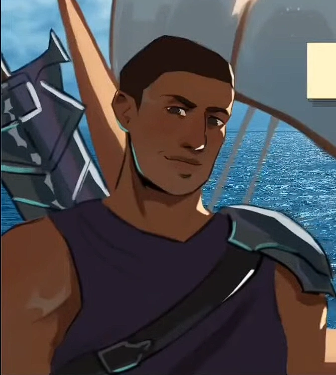

| Eurylochos | |
|---|---|
|  | |
| Zeichnung von Julsunart | |
| Biografie | |
| Spitznamen | Zweiter Kommandant |
| Mein Freund | |
| Bruder | |
| Beruf | Zweiter Kommandant der Griechischen Armee (Ithaka Division) |
| Zugehörigkeit | Königreich Ithaka |
| Odysseus | |
| Familie | Odysseus (Bruder, Schwager, Kapitän) |
| Ktimene (Ehefrau) | |
| Status | Tot |
| Tod | Akt 2 - getötet von Zeus in Donner Bringer, nachdem Odysseus seine gesamte Mannschaft statt ihm selbst opfert. |
| Hinter den Kulissen | |
| Auftritte | Troja Saga |
| Zyklopen Saga | |
| Ozean Saga | |
| Kirke Saga | |
| Unterwelt Saga | |
| Donner Saga | |
| Weisheits Saga | |
| Vergeltungs Saga | |
| Original Stimme | Armando Julian |
| Deutsche Stimme | Rolle offen |
Eurylochos
Du willst die ganze Macht, dann trägst du auch die ganze Schuld - Eurylochos ("Meuterei")
Eurylochos ist der zweite Kommandant in Odysseus' Crew. Er dient sowohl als Protagonist, als auch kurzzeitig als Antagonist für Odysseus.
Trivia
-
Obwohl es im Musical nicht ausdrücklich gesagt wird, stammt Eurylochos, wie in den Mythen, ursprünglich von
Sami, einer Insel in der Nähe von Ithaka. Jorge bestätigte dies durch das große Schwert der Figur, das als
„der Stärkste von Sami“ bezeichnet wird.
- Das Großschwert wurde von Guts aus Berserk und Cloud Strife aus Final Fantasy inspiriert. Ähnlich wie Cloud trägt auch Eurylochus einen Panzer auf der linken Schulter, während die andere Schulter frei liegt.
-
Obwohl sie im Musical nie erwähnt wird, hatte Eurylochos laut Homer eine Frau, Ktimene, die jüngste
Schwester von Odysseus. Eurylochus ist also der Schwager seines Kapitäns.
- Die Anwesenheit von Ktimene im Musical war zumindest in den ersten Entwürfen, in denen gezeigt wurde, wie Eurylochos ihr den Hof machen wollte, offiziell. In diesem Entwurf wurde sie von Diana, Jorges tatsächlicher Schwester, gesprochen.
- Im Gegensatz zu anderen Figuren des Musicals, die während ihrer Szenen durchgehend ihre eigene charakteristische Instrumentenpalette spielen, wechselt Eurylochos' Begleitinstrument während der gesamten Show. Vom Bass in Volle Kraft voraus über Klavier und Kick Drum in Glück geht aus bis hin zur Gitarre (Odysseus' Instrument), als er in Meuterei versucht, die Kontrolle über das Schiff zu übernehmen. Allerdings tritt die Besatzung in den oben genannten Liedern immer als Chor auf, so dass ihre Stimmen in gewisser Weise sein typisches Instrument sind.
Auftritte
-
Troja Saga
- Volle Kraft voraus (Debut)
- Zyklopen Saga
- Ozean Saga
- Kirke Saga
- Donner Saga
-
Weisheits Saga
- Liebe im Paradies (Ausschnitt aus Donner Bringer und Glück geht aus)
-
Vergeltungs Saga
- Geh schon ins Wasser (Ausschnitt aus Puppenspieler)